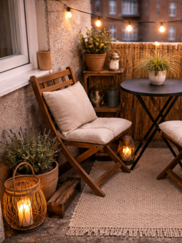
Rustic Balcony Ideas for Small City Spaces
20 March 2026
There’s something comforting about a rustic balcony. It’s not perfect. It’s not overly styled. It feels lived-in and natural.
If you’re living in a city apartment, creating that cozy, rustic feeling might seem difficult—but it’s actually one of the easiest styles to achieve on a small balcony. You don’t need a lot of space to make it work, just a thoughtful approach to how you use it.
You also don’t need a big budget or a full makeover. Just a few simple, intentional elements can completely change the space and make it feel more calm and inviting.
Even small details like natural textures, soft lighting, or a comfortable place to sit can make a big difference. Over time, these little touches come together to create a space you’ll actually want to use every day.
Here are 8 simple rules to follow when creating a realistic rustic balcony.
1. Start with Natural Materials
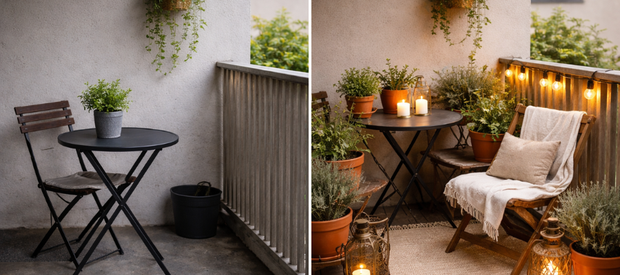
Rustic style begins with one simple idea: bring in textures that feel real, warm, and slightly imperfect. On a small city balcony or patio, this instantly softens the space and makes it feel more grounded.
Instead of plastic or glossy finishes, focus on materials that age well and feel organic:
- Wood (especially slightly worn or second-hand pieces)
- Terracotta or clay pots
- Linen or cotton fabrics
- Woven baskets or trays
These materials don’t need to be expensive or brand new. In fact, they look better when they’re not. A slightly scratched wooden stool or a faded linen cushion adds character without trying too hard.
Where to find them on a budget:
- Thrift stores (great for stools, crates, baskets)
- Facebook Marketplace or local buy/sell groups
- IKEA (look for unfinished or light wood pieces)
- Local garden centers for simple clay pots
💡 Tip: Don’t aim for a perfectly matching set. A rustic balcony feels more natural when pieces are a little different but still within the same tone.
2. Use Wooden Crates for Flexible Storage
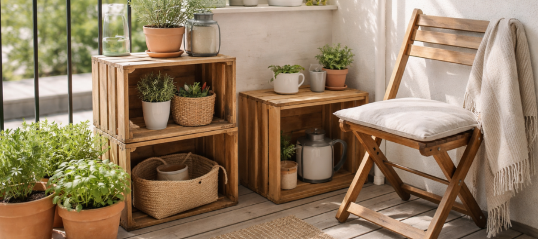
If you’re decorating a small balcony, flexibility matters more than anything. Wooden crates are one of the easiest and most affordable ways to create that relaxed rustic look while staying practical.
They can easily adapt to your space:
- Stack two or three to create simple vertical shelves
- Turn one sideways into a small side table
- Use them to store or display plants
- Slide them under a chair when you need more space
They’re perfect for city balconies because they’re lightweight, easy to move, and don’t feel bulky.
Where to find them:
- Grocery stores or small local markets
- Farmers markets (often used for produce)
- Online marketplaces or community groups
You can leave them raw for a more natural look or lightly sand them if needed—no need for complicated DIY.
3. Choose a Soft, Earthy Color Palette
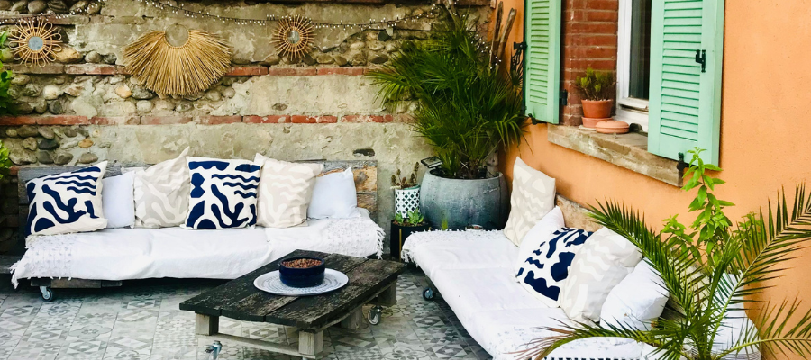
A rustic balcony doesn’t need to feel dark or heavy. In a small urban space, lighter, earthy tones actually help create a calm and open feeling.
Think in terms of a soft, natural palette:
- Warm beige and sand tones
- Soft greens (inspired by plants)
- Dusty or off-white shades
- Light, natural wood
Try to avoid:
- Bright plastic colors
- Anything that feels too polished or artificial
The goal is to create a space that feels quiet and relaxed—like a small escape from the city, even if you’re surrounded by buildings.
4. Add Simple, Low-Maintenance Plants
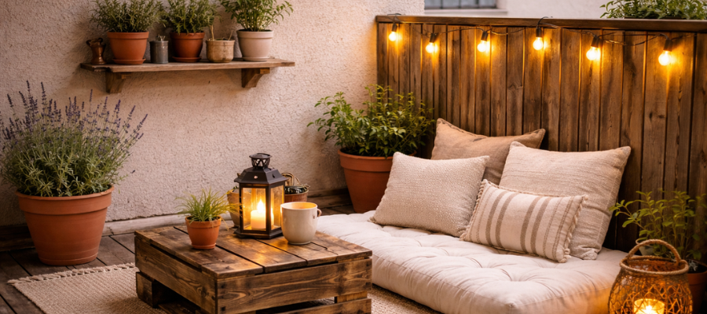
Plants bring life to a balcony, but you don’t need a full garden to create a beautiful effect. Keeping it simple actually works better for a calm, rustic look.
Start with just a few easy options:
- Herbs like mint, basil, or rosemary (practical and beautiful)
- Lavender for a soft, slightly Mediterranean feel
- Grasses or small shrubs for texture
Use containers that match the rustic vibe:
- Terracotta pots
- Slightly aged or weathered containers
- Mismatched planters for a more natural look
💡 Beginner tip: Start with 2–3 plants max. It’s easier to maintain, and your space won’t feel overcrowded.
5. Create One Cozy Sitting Spot
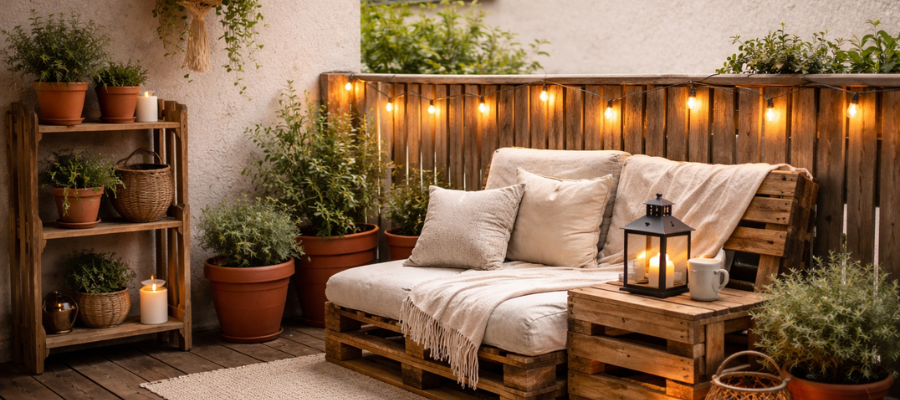
Even the smallest balcony deserves a place where you can sit and slow down. You don’t need a full furniture set—just one simple, comfortable spot.
Depending on your space, try:
- A folding chair with a linen cushion
- A small wooden bench
- Floor seating with a thick cushion
Then layer in just a few soft elements:
- A neutral throw blanket
- One textured pillow
This becomes your go-to corner for morning coffee, reading, or unwinding in the evening. Keeping it minimal helps the space feel calm instead of crowded.
6. Soft Lighting Changes Everything
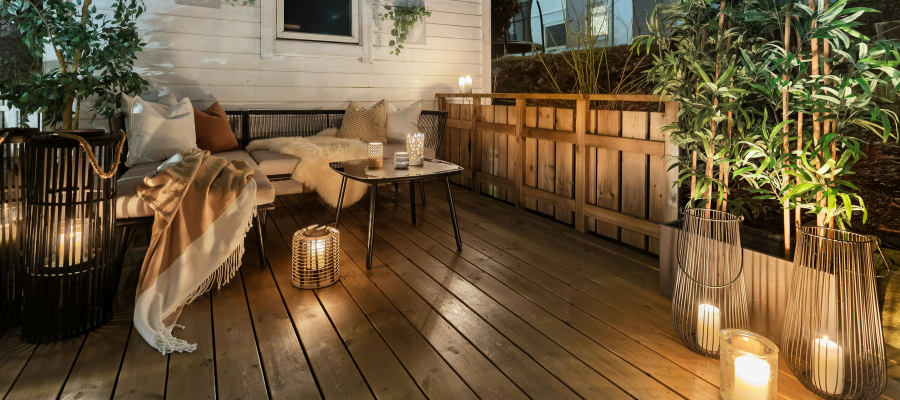
Lighting is what transforms a balcony from “just functional” to truly calming—especially in the evening.
Go for warm, soft light sources:
- String lights with a warm glow
- Solar lanterns for an easy, no-outlet option
- Small candles (real or LED for safety and convenience)
Try to avoid:
- Bright white lighting
- Harsh overhead lights
You’re not trying to fully light the space—you’re creating a gentle atmosphere. A soft glow is enough to make the balcony feel inviting without overwhelming it.
7. Let It Be a Little Imperfect
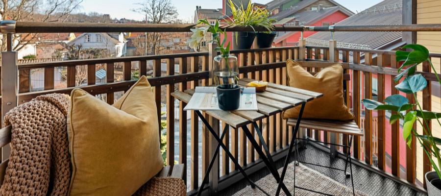
This is what really defines a rustic space. It’s not meant to look styled or “finished”—it’s meant to feel lived-in.
- Slightly worn textures
- Non-matching pieces
- A layout that feels natural, not symmetrical
A chipped pot, uneven wood, or slightly faded fabric isn’t a flaw—it’s what makes the space feel real. You don’t need a Pinterest-perfect balcony. In fact, the more relaxed and imperfect it is, the more calming it becomes.
8. Keep It Functional (Real Life First)
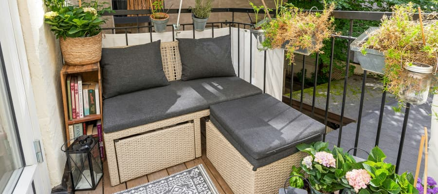
A beautiful balcony only works if it fits into your everyday life. Especially in a small city space, function should always come first.
Before adding anything, ask:
- Where will I put my coffee or a small plate?
- Do I have a place to store things when not in use?
- Is this easy to clean and maintain?
If something looks good but feels impractical, it’s not worth it. This is about making your space easier to use — not more complicated.
Final Thoughts
A rustic balcony isn’t about buying more things. It’s about choosing simple, natural elements and letting your space evolve slowly.
Start with one corner. Add one plant. Find one wooden piece you like.
Over time, your balcony will become a quiet place where you can step away from the noise of the city — even if it’s just for a few minutes a day.
You Might Also Like:
-
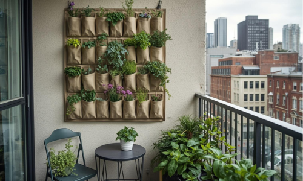
10 Balcony Wall Garden Mistakes That Kill Plants (And How to Avoid Them) -
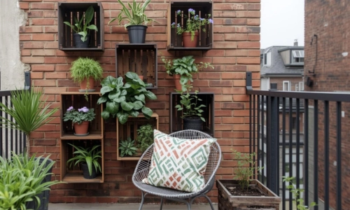
Simple Wall Garden Ideas for Small Balconies. -
 Container Gardening Ideas for Small Balconies and Patios.
Container Gardening Ideas for Small Balconies and Patios.
-
 Plants That Can Handle a Windy Balcony.
Plants That Can Handle a Windy Balcony.
-
 Low-Maintenance Houseplants That Make Thoughtful Gifts.
Low-Maintenance Houseplants That Make Thoughtful Gifts.
-
 Houseplants That Love a Summer on the Balcony.
Houseplants That Love a Summer on the Balcony.